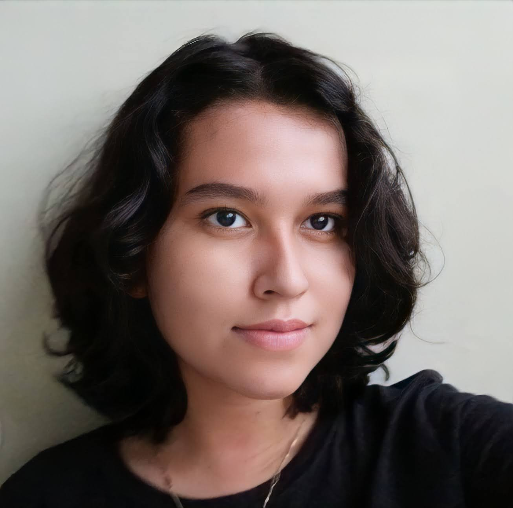

¿Quién soy?

Mi nombre es Keyri Zelada soy una estudiante salvadoreña de primer año de Bachillerato, tengo 16 años, me gusta
conocer y aprender cosas nuevas y me siento muy feliz de poder tomar la iniciativa de comenzar este proyecto
llamada D´paz pero ¿Qué significa todo esto?
D'paz es un Website que abarca la concientización de la Salud Mental en El Salvador y el resto del mundo. La
Salud Mental es tan escuchada en el siglo XXI pero todavía es tabú expresar lo que sentimos, hay temor y
desinformación, por eso buscó crear un espacio de reflexión, crear caminos hacia el amor propio y personalmente
tengo como propósito enseñar, ayudar y aprender juntos todo lo relacionado con la Salud Mental, porque esta ¡Sí
importa!